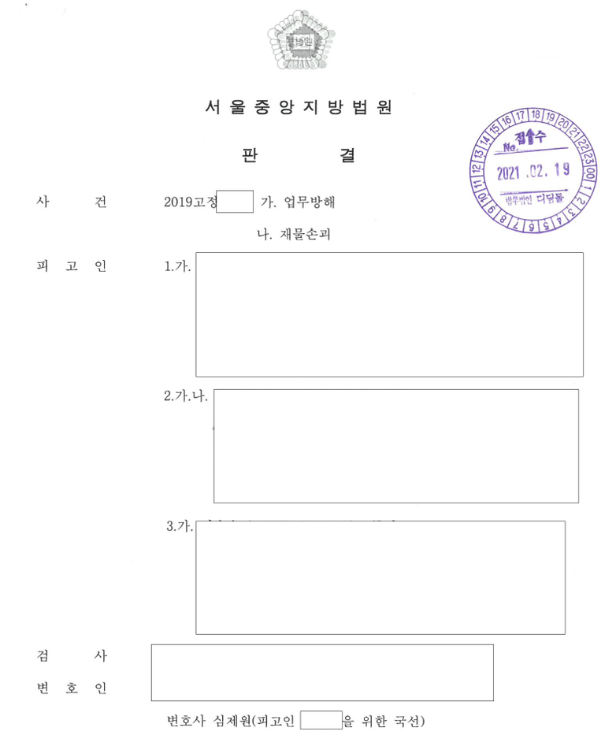
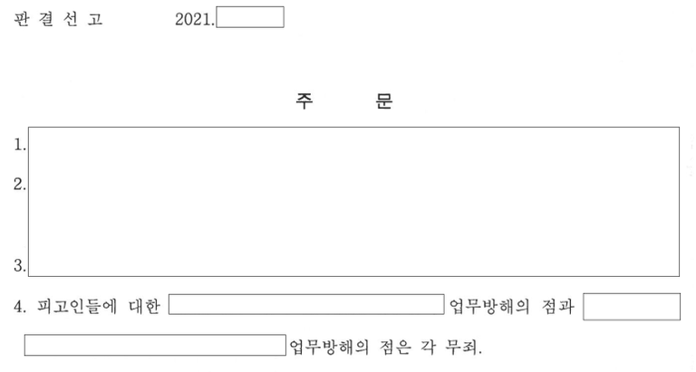

01사건 개요
아파트 입주자대표회의(입대의)에 반대하던 입주자들이 회의를 방청하다 고성으로 다투면서 회의가 열리지 못하자, 입대의 측이 업무방해로 고소한 사건입니다. 서울중앙지방법원 국선변호인으로 피고인을 변호했습니다.
02쟁점
- 회의를 방청하며 항의하고 다툰 행위를 입주자대표회의 업무를 방해한 것으로 볼 수 있는지
- 기소된 두 건 각각에 업무방해죄가 성립하는지
03변호사가 한 일
- 모두 8번의 재판에 출석해 여러 명의 증인을 신문했습니다.
- 회의가 열리지 못한 경위와 당시 상황을 따져 업무방해가 성립하지 않는다고 다퉜습니다.
- 국선 사건이지만 사선 사건과 똑같이 피고인의 입장에서 끝까지 변론했습니다.
04결과
기소된 업무방해 2건 모두 1심에서 무죄가 선고됐습니다. 현재 항소심이 진행 중입니다.


이 사례는 원문을 요약해 정리한 것입니다. 사건 경과와 판결문 등 전체 내용은 로톡에 게시된 원문에서 볼 수 있습니다.
로톡에서 전문 보기 →05비슷한 상황이라면
아파트 입주자대표회의를 둘러싼 갈등이 형사 고소로 번지는 경우가 많습니다. 회의장에서 항의했다는 것만으로 업무방해가 되는 것은 아니니, 당시 상황을 구체적으로 정리해 두세요.
아파트 입주자대표회의에서 항의했는데 업무방해로 고소당했습니다.
회의장에서 항의하거나 다퉜다는 사실만으로 업무방해죄가 바로 성립하는 것은 아닙니다. 회의가 열리지 못한 경위와 당시 상황을 구체적으로 따져야 합니다. 입주자대표회의 방해로 기소된 업무방해 2건이 모두 1심에서 무죄가 된 사례가 있습니다.
집행유예 기간 중에 다시 집행유예를 받을 수 있나요?
원칙적으로는 어렵지만, 새로 기소된 범죄가 형법 제37조 후단 경합범에 해당하면 다시 집행유예가 가능할 수 있습니다. 필로폰 투약으로 집행유예 기간 중이던 의뢰인이 다시 집행유예를 받은 사례가 있습니다.
음주운전이 세 번째인데 벌금으로 끝날 수 있나요?
사안에 따라 가능합니다. 혈중알코올농도 0.137%로 약 10km를 운전한 세 번째 음주운전 사건에서, 검찰 송치 직후 의견서를 제출해 정식재판 없이 약식명령 벌금으로 끝난 사례가 있습니다.
평일 09:00–18:00 변호사가 직접 전화를 받습니다.
재판으로 자리에 없는 경우 로톡으로 상담을 신청하시거나 이메일로 문의해 주세요.
의뢰인이 특정되지 않도록 사실관계를 일부 줄이거나 바꾸어 정리했습니다. 사건의 결과는 구체적인 사실관계와 증거에 따라 달라질 수 있으며, 같은 결과를 보장하지 않습니다.